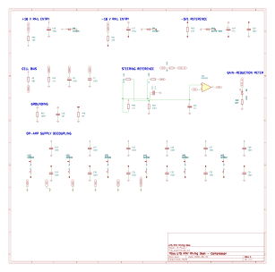

Sheet 6
Power and references
Not a signal path — five small independent circuits plus a block of decoupling. Everything else in the module depends on getting these voltages right.

Rail entry
The ±16 V rails arrive from the rack and pass through R50 and
R51 (10 Ω each) into reservoir capacitors C16 and
C17 (100 µF). The resistors do two things: with the capacitors they form a
low-pass filter that keeps rack-borne noise out, and they limit fault current if something goes
wrong on the card.
D8 and D9 are reverse-polarity clamps. Both sit
cathode-up, meaning both are reverse-biased and doing nothing in normal
operation. If a rail ever arrives with the wrong polarity, the corresponding diode conducts and
clamps it near ground while the 10 Ω resistor absorbs the current, instead of that
polarity reaching every IC on the board.
The −5.1 V reference
The gain cell's current source needs a stable negative reference that is not the −16 V rail — using the rail directly would make the tail current, and therefore the gain, follow every wobble on the supply.
R53 (1k8) feeds 6.1 mA from the −16 V rail into
D10, a 5.1 V zener. The cell draws about 3 mA of that, leaving roughly 3 mA
through the zener — comfortably inside its regulating range.
C19 and C20 bypass it.
Cell bias — VBIAS
R9 (68 kΩ) and R10 (11 kΩ) divide +16 V down to
2.23 V, heavily bypassed by C6 and C7.
This lifts the gain cell's input transistors off ground. Without it, Q3's
collector would sit too close to its emitter and the current source would not have enough
voltage across it to behave like a current source. Raising the whole cell by 2.23 V buys
Q3 about 2 V of headroom at full tail current.
The steering reference
This is the most sensitive network in the module, because it sets the gain cell's resting point.
| Net | Voltage | Set by | What it does |
|---|---|---|---|
VREF5 | 5.49 V | R60 / (R61+R62) | Top of the reference chain |
VREFA | 5.19 V | R60+R61 / R62 | Buffered by U6A to become STA |
STA | 5.19 V | U6A follower | Fixed reference for the dump transistors |
STB | 5.34 V at rest | R68 / R69 from VREF5 and the control voltage | The controlled side — moves with compression |
At rest STB sits about 150 mV above STA, which
holds the cell fully on. As the control voltage goes negative, R68/R69
drag STB down; when it passes about 120 mV below STA the cell
is at roughly 40 dB of gain reduction.
That resting offset is set by R61 (1k33) and R62 (23k2), which is
why both are 0.1% parts. If VREFA comes out too high, STB starts below
STA and the module sits in permanent gain reduction.
Gain-reduction meter
R77 (3k9) and LED1 hang off the control voltage. At rest the
control line is at 0 V and the LED is dark; at full compression it is near −10 V and the
LED draws about 2 mA. Brightness tracks gain reduction directly — crude, but it costs two
components and tells you instantly whether the compressor is working.
Grounding
R48 is a 0 Ω link and it is the single most important
component on this sheet. It is the one and only place where PSU ground and audio ground meet.
Fit exactly one.
R52 (100 Ω) and C18 (10 nF) connect chassis ground to audio
ground as a hybrid: the capacitor gives radio frequencies a low-impedance path to the
chassis for shielding, while the resistor stops mains-frequency current from circulating and
causing hum.
Decoupling
Every NE5532 gets a 100 nF capacitor on each supply pin, close to the package — twelve in all. Op amps draw current in fast bursts as their outputs move; the capacitors supply that locally instead of letting it travel around the board and modulate the rails. This is not optional garnish, it is what stops one stage from talking to another through the supply.
Current budget
About 60 mA per rail typical, against the 130 mA the 500-series specification allows. Worst-case NE5532s with a hard-driven output land near 110 mA. Building a stereo pair into a small frame? Omitting the aux section gives back roughly 16 mA per rail per module.